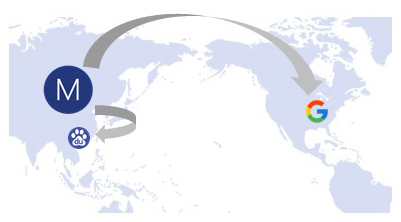

{{"app" | translate}}
运营商网络线路优化简介
由于中国大陆网络现况的特殊性
相同的服务器对于不同的运营商的网络连接状况
天差地别，电信直连的，联通或者移动可能绕全球，反之亦然
{{"app" | translate}}动态路由技术
根据IP数据库来确定运营商，动态调整网络访问至最佳服务器
获得最好的网络访问体验

新增手动选择运营商线路功能
有时候，IP数据库的运营商数据可能出错
这时可以启用手动选择最优的运营商线路。在服务器列表页面，选择运营商
选择运营商后，{{"app" | translate}}会根据所选的运营商给出针对该运营商特殊优化的服务器
是不是很简单呢？
谢谢耐心观看。我们还在不断改进。让我们一起做的更好。